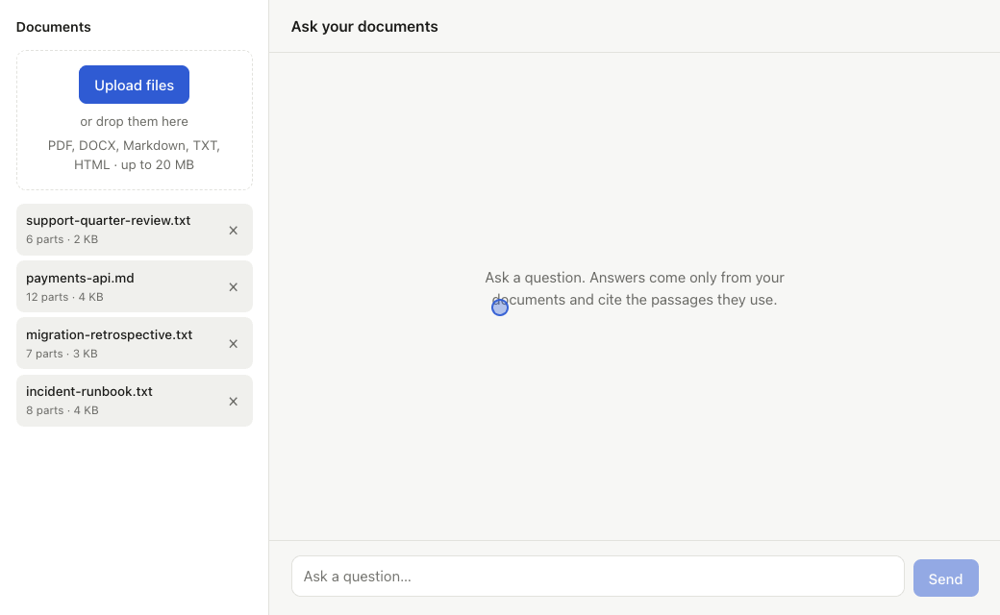

Chat with your documents, in Spring Boot
Docbound is a production-ready RAG starter for Java. Answers stream in, cite the exact passages they came from, and say "not found" instead of guessing. It runs on your machine with Ollama: no API keys, and your documents never leave it.

What you get
A complete, tested application you can clone, run in minutes, and build your own product on.
Cited, grounded answers
Every claim links to the passage it came from. Questions your documents can't answer get "not found", not a made-up reply.
Runs fully locally
Ollama runs the models on your own machine. No API keys, no per-token bills, and no documents sent to a third party.
Measured retrieval
Structure-aware chunking, tuned with an included evaluation harness: the right passage ranks in the top 5 for all 55 questions in its test set.
A complete app
Spring Boot 4.1 + Spring AI 2.0, a React UI, PostgreSQL + pgvector, tests and CI, all started with one Docker command.
Running in minutes
Works on macOS, Windows and Linux. You need:
- Docker: Docker Desktop, or Docker Engine on Linux
- Ollama, installed and running
- 8 GB RAM and about 5 GB of free disk
Step-by-step instructions for each system are in the README.
# one-time: download the models (~2.3 GB) ollama pull llama3.2 ollama pull nomic-embed-text # get the code and start everything git clone https://github.com/groundedkit/docbound.git cd docbound docker compose up --build # then open http://localhost:3000
Free, with a Pro edition coming
The free version is a complete app for one person on their own machine. Pro will add what a team needs to put it in front of real users.
Docbound Apache 2.0
Free and open source
- Upload PDF, Word, Markdown, text and HTML
- Streaming answers with citations
- Follow-up questions within a conversation
- Source panel showing the exact passage
- "Not found" instead of guessing
- Retrieval evaluation harness
- Tests, CI and one-command Docker setup
Docbound Pro Planned
Everything in the free version, plus:
- Login and per-user documents
- OpenAI and Anthropic models
- Saved chat history across sessions
- Usage and cost tracking
- Hybrid search and evaluation on your own documents
- Production deploy guides
Watch the repository on GitHub to hear when Pro is released.